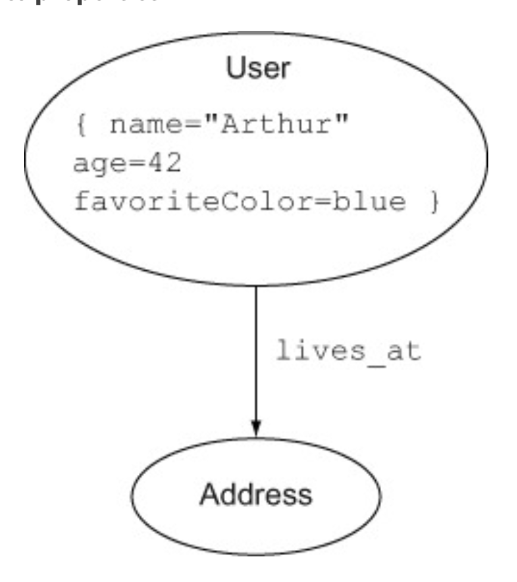
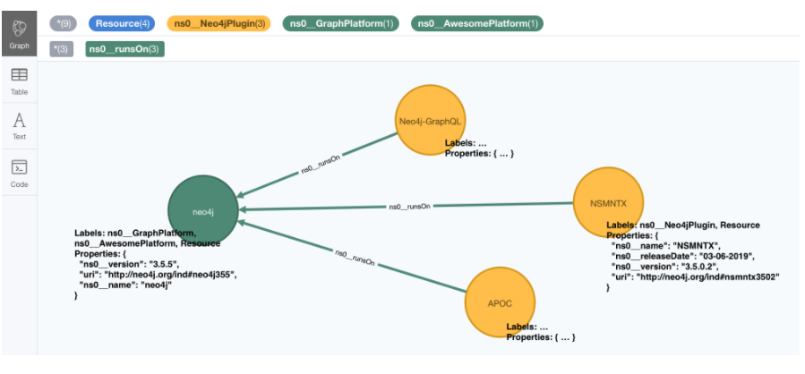

Neo4j
So new project new life. The one before did not take off due to bureaucratic issues - a pity.
Good is that on the new one I will work with Graph Databases. I love graph structures and I deeply believe in them so I am very happy to start this project.
This posts summarizes my learning encounters when working with graph databases and sets some mental structure for working with them.
The notes are based on Neo4j in action and the Official Documentation.
On the benefit of Graph Structure
This section makes clear why for some structures it makes sense to use graph databases instead of going with relational databases.
Consider for instance a friendship database. This has the following shape:

As you can see above in the T_USER table you assign a primary key
to each person. Then on the T_USER_FRIEND table you have a primary
key id representing the friendship relation id and a friendship
relation represented by two foreign keys referencing the T_USER
primary key.
It follows immediately that if you want to get the number of friends of a single person this can be easily done by:
select count(distinct uf.*) from t_user_friend uf where uf.user_1 = ?
What about finding the number of friends of a all of my friends?
Then you would need to do a join operation in a relational database
select count(distinct uf2.*) from t_user_friend uf1
inner join t_user_friend uf2 on uf1.user_1 = uf2.user_2
where uf1.user_1 = ?
I.e. you would first select all of my friends friends by doing the join operation. And then simply count the number of distinct entries.
You understand now that if you want to find the friends of the friends of my friends you would do 3 join operations etc.
Note that, although you’re only interested in friends of friends of a single user, you have to perform a join of all data in the tuserfriend table, and then discard all rows that you’re not interested in.
It is obvious that as each join computes a cartesian product down the hood such operations become quickly extremely computational intense. Even with smaller databases the size of the joins increase exponentially in the depth of the friendships relations.
It is so straightforward to see that in such cases relational databases are not the best way of representing the data for making such queries.
Graph databases were developed to deal exactly with such type of queries and data models. Here the idea is to use graph theory to answer such queries in a more efficient way using the concept of traversal, i.e. by visiting nodes in the graph by moving between nodes connected with relationships.
The key concept of traversals is that they’re localized—querying the data using a traversal only takes into account the data that’s required, without needing to perform expensive grouping operations on the entire data set, like you do with join operations on relational data.
Note moreover that as long as you perform queries that leverage some graph distance concept - such as the friends of friends - the performance of queries is optimized and scale well with the size of the database. I.e. while making a query at depth 5 (i.e. friends of friends of friends etc.) on a table with million entries will quickly break down your hardware resources - due to the global structure of the query - a graph database will continue to perform the local operations from the node of interest visiting by traversal. I.e. it will continue to do local-queries that will not be much affected of the overall size of the database and can therefore quickly scale.
Label-property based vs. RDF graphs
These are very different and this should be your first call when working with graph databases.
Essentially if you primarily need to walk, query and analyse paths through your graph, then Labelled-Property graphs are probably the way to go. If you are more interested in the nature of the relationships between things, and creating rich semantic representations of things, then RDF graphs hit the spot. (source)
This should give you some more intuition into the topic
So go over it at some point and understand the difference in depth and do some longer post. This is a good reference in this sense.
Also this post gives a quick dirty intro.
Data Modeling in Neo4j
Interestingly Neo4j is schemaless, so unlike classical databases you do not have to specify the schema and relationships before starting to write the data into it.
This means that the data model for a Neo4j database is implicit in the data it contains, rather than explicitly defined as part of the database itself. In this sense the data model is a description of the data it contains rather than being a prescription of what it should contain. So that we can say overall that the data model is descriptive.
In this sense the query language works in pattern defined way instead of a rigid relation based way as the one you are used to work in RDMS. The Neo4j query language, Cypher, works by matching patterns in the data, so one way to see your data model is as an inventory of basic patterns.
In this sense, to structure your queries in a meaningful way what you usually do is to draw diagrams for portion of the graph. Understand the common patterns and reason about meaningful queries to do according to that.
Note that in Neo4j the first class citizens as in any graph are
nodes and edges. However, despite of this, not everything must be
modeled as a node or an edge. Nodes and Edges can have
properties. These are attributes of the node that can be accessed
with the standard node.property syntax. Properties are saved as
key-value pairs.
Domain Modeling
This has important consequences for the domain modeling - consider the following example:

Then you should be careful when checking if the above is the most
meaningful model. It might well be that some of these nodes might be
well be modeled as properties. Hence in general when you have
has_property relations consider well if what you need is indeed a
node or whether you can model via properties.
In fact unless, for some reason, you wanted to link users together based on their favorite colors, there’s probably no need for FavoriteColor to be modeled as a node; it could be an property on the User node.
Hence leveraging the property function you would come up with something as that in the end:

Now suppose you want to distinguish between a user’s current and
previous addresses. One way to do this would be to attach an
is_current flag to the address node as an property. But if two
users had lived at the same address, and one was the current and the
other a previous occupant, then whatever value this flag had would
be false for one of them. Being a user’s current address is not a
property of the address itself, or of the user, but of the
relationship between them—a relationship that may change over time,
as users move from one address to another.

Note now that a further way to refine the above is to set the
is_current tag as a property of the relation itself.

So in general when modeling with graph databases you should make yourself clear what you want to model as entities (which will be nodes), what you want to model as relations (which will be edges) and finally the properties that the above should have.
An important thing to consider when making such choice is as well to consider the speed at which you can traverse the graph. It is clear that depending on how you model the entities you will have a better or worse performance.
For instance you should not create new nodes/entities which main
purpose is to store additional properties for some entity. To do
that a new possibility is incorporated into the Neo4j API as of
version 2.0, i.e. the possibility of assigning labels to
nodes. Think of labels as collection IDs through which as
mentioned you can assign nodes to given collections. Note that
single nodes might be assigned to multiple IDs.
Note then that on the one hand by using labels properly you can reduce the overall number of nodes so that you have a more compact graph that is easier to traverse.
On the top of it, you can as well build queries based on the labels. Like this your query in itself does not have to deal with missing data as you can base based on the labels just the nodes that have the additional properties you are interested in.
Note that matching a label at query time is done in the following
way (u:User). Here you are actually selecting all of the nodes
with the label: User.
Neo4j in Production
As the project is starting pretty quickly I will explore the depths of the query syntax and traversals later. I will now go straight to this chapter as pretty soon in the project together with the data model we will have to make this call.
There are essentially two ways to deploy Neo4j, one is embedded mode the other
being server mode. We will see how this decision will influence
how you will work with it.
Embedded vs. Server Mode
At the beginning Neo4j was Java centered. Within the embedded
mode setup, your Java application and new shiny Neo4j database
were happily bundled together as a single deployable entity, and
together they went forth to conquer the brave new world of
interesting graph-based problems.
Neo4j, although written in Java, is inherently just a JVM-based product. This means that, theoretically, any JVM-based language (provided the appropriate libraries or bindings can be found or written) can also make use of the Neo4j database. Thus, Neo4j’s reach naturally began to extend to other JVM-based languages.
But it was the need to operate in more network-friendly
architectures and to support other non-JVM clients that were the
primary drivers behind the introduction of the server mode.
With server mode, the Neo4j database runs in its own process, with
clients talking to it via its dedicated HTTP-based REST API. So if
you want to go Pythonic go with server mode.
Such that in general the ecosystem of Neo4j would look as
follows:

Note that as usual, with the inherent network latency introduced in the server mode, performance is naturally not going to be as good as accessing the database using native code directly. To add more flexibility to the server offering, server plugins and unmanaged extensions. At the moment I do not think that performance is key plus to get up and running with Java is not a question to this stage and will skip it for now and stay in my Pythonic world.
Server Mode
Unlike embedded mode, running Neo4j in server mode involves having all the classes and logic to access and process interactions with the Neo4j database contained within its own dedicated process, completely separate from any clients wishing to use it.
In order to interact with the server process there is a well-defined, yet extensible, HTTP-based REST API.
The general structure of running Neo4j in server mode is the following:

Given the basic structure now the standard question of REST
vs. graphQL vs. other architectures come up.
Let me briefly make the excursus on this to this stage.
GRAPHQL vs REST
GraphQL has nothing to do with graph databases. It is much more a new kind of API originally developed by Facebook that is rapidly expanding.
In simple terms:
GraphQL is a REST API alternative with a structured query language combined with a runtime for query processing and serving data to GraphQL clients (and it is almost always implemented with JSON in mind).
GraphQL isn't tied to any specific database or storage engine and is instead backed by your existing code and data.
While RESTful API have in fact many benefits, such as the caching structures, the general architecture etc. they have a drawback that has led to the development and a general interest on GraphQL. The major drawback being the fact that sometimes RESTful API are too rigid. I.e. this is their power but also their drawback.
Sometimes maybe you are not interested in the entire information you would obtain from the API. Sometimes to get your information of need you have to do very complex and chatty API call. Think of an API where we first have to GET user first and then fetch each friend individually via GET /user:id/friend/:id endpoint, this can result in N+1 queries and is a will known performance issue in API and database queries. This was in fact the behavior you observed on your last project API.
In other words, RESTful API calls are chained on the client before the final representation can be formed for display. GraphQL can reduce this by enabling the server to aggregate the data for the client in a single query. In fact, GraphQL comes handy as it creates an API that allows for arbitrary requests that are complaint with the GraphQL runtime and protocol.
This has pro and cons as especially in the case of open API great care have to be taken to ensure GraphQL queries don’t result in expensive join queries that can bring down server performance or even DDoS the server.
Back to Server Neo4j
So back to the Neo4j server. Given that you are interested in navigating your graph database it might make little sense to use a RESTful approach as for instance to navigate such graph you would have to make multiple iterative calls. Think for instance about this first call:

You can then start from there and navigate your database.
However, this is very much impractical.
In this sense I read online that it is common practice for some use cases to leverage GraphQL in such cases. This is in fact a good example of a possible use case for such technology. In fact there are built-in GraphQL implementations in Neo4j. On the other hand I also read online that some complain about it saying that if you stop by leveraging the GraphQL queries then you probably did not need a graph database in the first place and a document store might have been enough. Whatever it is. I guess both have their point and you will not get completely the point of the discussion until you make yourself your hands dirty.
In any case what is good in Neo4j is that luckily they have implemented a REST API where you can leverage the Cypher query language such that you can leverage the standard traversal properties and get to your data of interest quickly without having to do all of that manual work iterating over different APIs calls repeatedly.
In fact using the Cypher API, you would make POST of the
following form:

On Remote Client Libraries
Although it is possible for you to directly talk with the RESTful Server directly and get your information via raw API as done above many suggest to use client libraries to talk with Neo4j. There again much of the complexity of the raw API is abstracted away such that you can easily communicate in an intuitive way.
What usually happens is that a runtime is added between your client and the server. In the runtime running on a standard framework the complexity is masked and you would use the new library functions and go through it in the following way:

This seems to me quite an overhead also because you would then have to make sure that everything scales well. So try to understand better the implications of taking such an approach should this project become very large at some point.
You can find a list of different runtime specific drivers (i.e. read more as remote REST wrappers) here.
On server Plug-ins
This is a nice feature of the Server Mode. The idea is that as
mentioned sometimes you might get back too much information via
API calls. Instead of processing the response on the client when
you get it, what you can do is to write server Plug-ins.
Server plug-ins provide a mechanism for offloading some of the
processing-intensive logic to the server rather than having to
perform it all on the client, with multiple requests having to
flow backward and forward to accomplish the same thing. Server
plugins are sometimes compared to stored procedures in the
relational database world.
Server plugins have specifically been designed to extend the existing REST API options returned for a node, relationship, or the global graph database. Recall that when you make a request for the detail of a particular node, you get a lot of options back, including an extensions key. This will specify the server extensions specified for your server.
{ ...
"extensions" : { . . .},
"property" : "http://localhost:7474/db/data/node/0/properties/{key}",
"self" : "http://localhost:7474/db/data/node/0",
"data" : { "name" : "Adam" }
... }
To write a server plug-in you can extend a ServerPlugin class
that should be contained in your driver. You should then be sure
that the name of your class extending and inheriting from
ServerPlugin is contained in
org.neo4j.server.plugins.ServerPlugin.
If that is the case you should then see it in the extensions in
the json received from the REST endpoint.
Unmanaged Extensions
If you require complete control over your server-side code, then
unmanaged extensions may be what you’re looking for. Unlike
server plugins, which merely allow you to augment the existing
REST API at specific points, unmanaged extensions essentially
allow you to define your own domain-specific REST API.
This means that instead of dealing with general nodes and
relationships, you can now with a specific set of nodes - say
Users and Movies. This was not an option for server
Plugins. There you could just specify a plugin at a node level
that would be available across all nodes.
Broadly speaking, you define a class, which, through a set of annotations, binds the class to a particular URL pattern and mount point within the Neo4j server. When this mount point is invoked, control is transferred to this class, which can have full access to the Neo4j graph database, allowing the class to perform whatever actions or functionality is required, returning the data in whatever format is desired.
Neo4j for Ontologies
This is a good example of making more value out of Neo4j. At the end of the presentation he rushed a bit too much so it was not easy for an intro person like me. What I am still missing is why you need to go through RDF structures. Probably because the imported Ontology is defined in that terms. Would definitely need to make more research in any case.
As for inference.. I think that to name inference the thing in the video is a little bit too much and misleading. Maybe I am missing a point.
From what I can get the "inference" goes as follows.
You have a graph database containing some entities. You import an ontology that specifies the relation among entities - even inserting new entities and mapping subcategories etc.
You can now search and filter based on the new entities relations defined in the ontology. So you can "infer" (or let's say read) from the ontology some new knowledge on the relations.
So nice but that can be used in a straightforward for my project. If there is an ontology for the case at issue it might be very useful. What you have however to consider is on how to make your semantics sharable. In fact this is a question you should ask when creating your data model.
Do I want to create an ontology on top of data objects to map the model domain? Should I do it in RDF form and feed it into the graph database as described in the video?
Should I work just mapping relations among the data objects themselves without creating a separate ontology on top of it?
These are all questions you should address with the domain experts of your problem. Consider such things in the introductory talk for the project.
Ok lucky me - there seem to be an ontology available for the use case. So it is always worthy to check at the material around.
Experiment with Neo4j on Local Machine
Install it with brew
brew install neo4j
Then you can start the server with
neo4j start
And stop it with
neo4j stop
Interestingly at the beginning you will be asked for a login. The
default user and password are neo4j. After that you can set a new
password.
Experiment with Neo4j Desktop
This has all of the licensed tools built in and it is quick and easy to get up and running with it. For instance also the implementation of managed extensions is straightforward.
I will experiment a bit here for now. That makes it easier.
The installation via brew on MACOSX is also straightforward:
brew install --cask neo4j
Neo4j Bloom
I think we should use this for visualization. It has all the features we need. It is good for the 3 months PoC and we would not waste too much time for getting up and running with everything.
The issue is that I am noting now that is not open-sourced. I.e. there are licensing costs. So it's probably out.
Alternative to Bloom
I will work with open source tools instead of Bloom due to the license issues.
An IBM group did some project with it and connected the Discovery services with Neo4j. They implemented a microservices structure with a Flask backend that is orchestrating the entire thing.
The solution with Discovery is ingenious. A bit an overkill in my opinion and I doubt it will run smoothly without a lot of fine tuning. For the PoC I will just borrow from that code to connect to Neo4j and use an Angular app for the visualization.
Neo4j Install on Kuberenetes
So for the project we will work with a kubernetes cluster. So the next steps will be to install the Neo4j Community Edition on our cluster.
While it is out of the box and straightforward to install Neo4j Enterprise Edition on it the community edition process seems to be more convoluted.
Let's try to see by trial and error how long it will take to me.
I also question if it makes sense to work with a helm chart directly as I will not be able to scale in either case with the community edition and you will generally probably not be able to use the benefit of kubernetes. Anyways let's leave the point open and let's try to install it. If it is quick it's fine. Then you are already on the platform so that post-PoC you will be able to quickly expand. Moreover like this you will be able to expand and refresh your skills on k8s.
So apparently it is possible to use the enterprise edition neo4j helm chart and change some parameters. Check this link in this sense.
Note that the above is fine in the general sense i.e. some of these parameters I guess still hold and probably you can change the structure and achieve the same as mentioned there. The helm chart mentioned there is outdated in any case.
The new chart is this.
So try to install it:
helm install neo-helm https://github.com/neo4j-contrib/neo4j-helm/releases/download/4.2.2-1/neo4j-4.2.2-1.tgz --set core.standalone=true --set acceptLicenseAgreement=yes --set neo4jPassword="MYPASSWORD" --namespace usz-sarcoma
Good, now you have services and persitant volume associated with
it. Note that I installed the core.standalone mode where
Replicasets are ignored and it acts as the community
edition. I.e. it does not scale etc. Try to understand if with this
you are fine or not.
Ok so after installation I can see the various services running
kubectl get services --namespace usz-sarcoma
NAME TYPE CLUSTER-IP EXTERNAL-IP PORT(S) AGE discovery-neo-helm-neo4j-0 ClusterIP None <none> 5000/TCP,6000/TCP,7000/TCP,3637/TCP 3h40m discovery-neo-helm-neo4j-1 ClusterIP None <none> 5000/TCP,6000/TCP,7000/TCP,3637/TCP 3h40m discovery-neo-helm-neo4j-2 ClusterIP None <none> 5000/TCP,6000/TCP,7000/TCP,3637/TCP 3h40m discovery-neo-helm-neo4j-3 ClusterIP None <none> 5000/TCP,6000/TCP,7000/TCP,3637/TCP 3h40m discovery-neo-helm-neo4j-4 ClusterIP None <none> 5000/TCP,6000/TCP,7000/TCP,3637/TCP 3h40m discovery-neo-helm-neo4j-5 ClusterIP None <none> 5000/TCP,6000/TCP,7000/TCP,3637/TCP 3h40m neo-helm-neo4j ClusterIP None <none> 7474/TCP,7687/TCP,7473/TCP,6362/TCP 3h40m
And you will have your persitant storage associated with the service as well
kubectl get pvc
NAME STATUS VOLUME CAPACITY ACCESS MODES STORAGECLASS AGE datadir-neo-helm-neo4j-core-0 Bound pvc-88a62e20-4905-4d51-bda4-f5b4e126e84a 20Gi RWO ibmc-block-gold 3h41m
Good. Now you can also see your running pod that is running the services
kubectl get pods
NAME READY STATUS RESTARTS AGE neo-helm-neo4j-core-0 1/1 Running 0 3h42m
Well done. You must now expose the services to the outside world. I will start easily by testing it locally doing a port forward.
kctl port-forward neo-helm-neo4j-core-0 7474:7474 7687:7687 7473:7473 --namespace usz-sarcoma
Good. You can now access the neo4j webapp at localhost:7474 and
access the database from there via localhost:7687.
You can start playing with it. Understand the visualization and the application schema through which you will communicate with the database. Then come back to expose the service to the outside world.
External Service Exposure
Ok… pretty annoying. You cannot expose the image via the standard
kubctl expose pod neo-helm-neo4j-core-0 --type="NodePort"
The reason why is explained here. So day of trouble at the horizon. Follow the instructions there and configure the IP through the static one.
It will be a looong afternoon.
Cypher Language
I like to work in a clean way. So the first thing I will do is create my specific database.
$ create database <dbName>
Next you will fill it up with food…
On directional Nodes
Neo4j’s graphs are directed, which means that each relationship must have well-defined start and end nodes. Bidirectional relationships in Neo4j can be modeled with two separate relationships, one in each direction.
Note that even in the case of a directed relationship you might be able to infer relationships at query time in any of the two directions. I.e. you can go against the current so to say and infer relationship against current as well.
Cypher Syntax
There are 4 most important components in cypher.
- Create - this is used for creating nodes and relations.
- Match - this is used for matching patterns, allowing you to locate the subgraphs of interesting data.
- Where - this is the standard filtering clause.
- Return — this returns the results you’re interested in.
On the Big AND clause
Before going into the syntax of cypher it is important to
understand that when you do specify more than 1 argument you are
in fact using an AND clause.
That means that if you, for instance, use two MATCH clause next
to each other you will ultimately use both of the filters so that
you ultimately can interpret that syntax as a big AND
statement.
Creation of Nodes and Relations
-
Create Node with properties.
""" CREATE (p1:Person{name: "YourSecretPerson"}) """ -
Create Nodes and add Relation - 1 Shot
""" CREATE (p1:Person{person: $person1}) CREATE (p2:Person{person: $person2}) CREATE (p1)-[r:IS_FRIEND_OF]-> (p2) """ -
Create Relation from Existing Nodes
Clear to see from the below, you match the two nodes that you are interested in first and then add the relationship there.
""" MATCH (a:Person), (b:Person) WHERE a.person = $person1 AND b.person = $person2 CREATE (a)-[r:IS_FRIEND_OF]->(b) """
-
Set Properties to Relation
This works again the same way. With that
json-shsyntax there.Using the example above it is clear that it becomes:
""" CREATE (p1:Person{person: $person1}) CREATE (p2:Person{person: $person2}) CREATE (p1)-[r:IS_FRIEND_OF {name: a.name + '<->' + b.name}]-> (p2) """ -
Important on Pattern Creation
Note that in the above you do not have to create everything yourself.
I.e. if you specify a pattern and some of the pieces of it are missing from your network, these are automatically created.
""" MATCH (a:Person) WHERE a.person = 'Marco' CREATE p = (Person {person:'Roberto'})-[:IS_FRIEND_OF]->(a)<-[:IS_FRIEND_OF]-(PERSON {person: 'Bagutti'}) """Interesting. For some reason if you do not set a tag to the Person
nodesabove, the database does not recognize these properly and does not set the attribute of them in the correct way.Ok, so the explanation of the above comes directly in the next section. The idea is simply that you have plain
nodesandrelationsif you do not specify anyTAGSfor them.These are two different exercises. with the
:mytagpart you specify labels to the nodes, relations so that you can then filter based on them at query time. This was briefly touched upon above in the introduction. -
How to work directly with Json
That is mostly it. You can then check at the following link, the option to automatically create nodes out of
jsonfiles. This might be useful then when you set up everything properly to talk with the front-end.
Extracting Relevant Information
-
Get all of the nodes and the entire graph
By just specifying a pattern with a single node and no labels, all nodes in the graph will be returned.
""" MATCH (n) RETURN n """
Note that your statements cannot just end with a
MATCHclause. TheMATCHpart is how you get the information, then you have to process and do something with that information. -
Get Nodes by ID
This is especially handy. Every time you create a node - a node id is automatically created and associated with it.
""" MATCH (n) WHERE id(n) = 0 RETURN n """
You can then sort based on the index.
With this you can easily see that you can get all of the relations for a given ID.
You can also filter based on multiple IDs at once. See for instance the following:
""" MATCH (n) WHERE id(n) in [1,2,3] RETURN n """
-
Getting all Nodes Matching a Pattern
This is important - recall the importance of specifying
labelsmentioned above.It is of paramount importance to have such labels in your graph. This will allow you to make sense of the entire structure of your network as well to filter out just
nodes,relationsbelonging to a specific label category.For instance to get all of the names of the people in your network you can use the following
""" MATCH (p:Person) RETURN p.name """
-
Directed vs Undirected queries
Nothing special here. Just notice that you have to make the distinction about how you the relation goes.
If you do not care the side of the connection just use the
--syntax.For instance the following works
""" MATCH (director {name: 'Oliver Stone'})--(movie) RETURN movie.title """--means related to, without regard to type or direction of the relationship.If you want to specify the relation direction you can use an ASCII style arrow.
Always test in your Neo4j local console this will allow you to make sense of all of that before going into production.
Good so that is pretty much very straightforward syntax.
-
Others
Ok this gave you a basis now. All of the rest I will keep as a
stack-overflowjob. With that you should be good to go to make sense of the logic for the coming weeks.One example could be for instance queries on multiple labels via an or syntax
(node1)-[:label1|label2]-(node2).Moreover other options consists in:
- specify maximum number of hops distance in the graph (can be used in conjunction to the multiple labels case above)
- can use properties filter for relationship queries matches
- finding shortest path; there is a command exactly for doing that
- Optional matches - If a relationship is optional, use the
OPTIONAL MATCHclause. This is similar to how a SQL outer join works. If the relationship is there, it is returned. If it’s not,nullis returned in its place. -
WITH; with this you can organize the output and decide on it. -
FOREACH, apply any of theSET,REMOVE,CREATE,MERGE,DELETEoperations. you apply it to a set of matched results.
Generally look check at the official documentation when you need to make sense and build up your queries.
Updating Graph via Cypher
Python Driver
This is mostly straightforward. There is an important difference
between transactions and session that you should get.
Check at it here as the answer of a stack overflow post:
Session.run() will actually create a transaction, execute the statement, and commit the transaction. Transaction.run() will leave the transaction open until you commit it, but the statement will still be sent and interpreted and executed, and results will be returned. However, any changes won't actually be persisted into the datastore, and won't be visible to queries outside of the transaction. You have to mark the transaction as successful and commit it or it will be rolled back.
You should try not to use transactions; open transactions prevent changes to indexes and constraints and increase memory usage. The only reason to use transactions is for the rollback potential; if you want to see what the results of the query are, and maybe undo it depending on those results, then use a transaction. Otherwise use a session.
Important to understand for the python driver is that when you
return nodes these are of a particular class neo4j.graph.Node.
You can then check here such a data type and how you work with it https://neo4j.com/docs/api/python-driver/current/api.html#graph-data-types
The basic functioning I saw in some apps built with the driver is to use a serializer function.
This could for instance look as follows:
def serialize_node(node):
return {
'title': node['title'],
'layer': node['layer'],
'message': node['message'],
'selected': node['selected'],
}
You can then pass this function on a neo4j.graph.Node and save
them in a json affine way.
From there it will be usual work.
Finally, notice that to get the id, this from __init__ in the
python class so that you will work with it by calling it via
node.id.
Notice that if you return entire paths you will need a different
processing.
def update_and_withdraw(tx, json):
"""update the selected status of a node
"""
result = tx.run("""
MATCH (n)
WHERE id(n) = $ID
SET n.selected = $selected
RETURN (n) -[:triggers]-> () as data
""", ID = json['id'], selected = json['selected'])
# ID, selected
values = []
for record in result:
values.extend([k[2] for k in record.data()['data']]) ## so notice that the index here is of the triples that come back.
NeoSemantics
This is the way you would deal with RDF schema and there are scripts that parse such into neo4j syntax as import and exports.
There are also scripts that deal with ontologies imports. Have to test these out.
Install
In order to have such toolkit you need to install the extension to your neo4j database.
I will try to do this next in my database running in the oc cluster.
First of all ssh into your cluster such that you can have a bash session over there.
$ kubectl exec -ti $POD_NAME bash
Then change your directory to the $NEO4J_HOME directory.
cd $NEO4J_HOME
You can then go to the plugin repo in there
cd plugins
Then you can get the release you want from here and copy the link of the jar file of interest.
# in my case
$ wget https://github.com/neo4j-labs/neosemantics/releases/download/4.2.0.0/neosemantics-4.2.0.0.jar
Then I made the following change:
$ echo "dbms.unmanaged_extension_classes=n10s.endpoint=/rdf" >> <NEO_HOME>/conf/neo4j.conf
Then you should restart the server. I think this is where it is not
working correctly. Cause when I did $NEO4J_HOME/bin/neo4j restart
it said that there was no instance of neo4j running.
Then it started one. But then I could not find a working mounted extension as when calling the endpoint I got a 404 error
:GET http://localhost:7474/rdf/ping
this from the web-browser with port forward. That is weird. Even if it is pod as long as you do not kill and restart that pod it should work as a normal neo4j instance. So theoretically the above should have worked.
I will now work with the Desktop version as time is limited. I will then figure out what is not working in the above. And possibly use a docker image.
Semantics
Basically you have options to specify how URI objects are translated into your label-property graph.
There are default settings on how you treat general structures; you
can check at them by calling n10s.graphconfig.init().
After an initial Graph Config has been created and before the data
is imported, the method n10s.graphconfig.set will let you update
individual configuration items. Here’s an example:
call n10s.graphconfig.init();
call n10s.graphconfig.set( { keepLangTag: true, handleRDFTypes: "LABELS_AND_NODES" });
Once you specify this general configuration option you can start
importing your RDF data. This can be done via the
n10s.rdf.import.fetch function. From there you can specify a
URL or a local resource to import.
For instance, consider the following turtle file.
@prefix neo4voc: <http://neo4j.org/vocab/sw#> .
@prefix neo4ind: <http://neo4j.org/ind#> .
neo4ind:nsmntx3502 neo4voc:name "NSMNTX" ;
a neo4voc:Neo4jPlugin ;
neo4voc:version "3.5.0.2" ;
neo4voc:releaseDate "03-06-2019" ;
neo4voc:runsOn neo4ind:neo4j355 .
neo4ind:apoc3502 neo4voc:name "APOC" ;
a neo4voc:Neo4jPlugin ;
neo4voc:version "3.5.0.4" ;
neo4voc:releaseDate "05-31-2019" ;
neo4voc:runsOn neo4ind:neo4j355 .
neo4ind:graphql3502 neo4voc:name "Neo4j-GraphQL" ;
a neo4voc:Neo4jPlugin ;
neo4voc:version "3.5.0.3" ;
neo4voc:releaseDate "05-05-2019" ;
neo4voc:runsOn neo4ind:neo4j355 .
neo4ind:neo4j355 neo4voc:name "neo4j" ;
a neo4voc:GraphPlatform , neo4voc:AwesomePlatform ;
neo4voc:version "3.5.5" .
You can then import such a turtle file with the following command - note that the resource above is saved at this URL below.
CALL n10s.rdf.import.fetch("https://github.com/neo4j-labs/neosemantics/raw/3.5/docs/rdf/nsmntx.ttl","Turtle");
ok - so pretty straightforward. after calling such function you will find the converted RDF in your neo4j database.
There are a few conversion default you need to understand. Consider the RDF above. This is converted along the following lines.
What you can see from the above - and your take away should be the following:
-
dataTypeproperties, i.e. relating individuals to literal data (strings, numbers, datetime etc.), in your RDF have been converted into node properties -
object properties, i.e. relate individuals to other individuals, are now relationships connecting nodes. - Every node represents a resource and has a property with its
URI. -
rdf:typestatements are transformed into node labels. I.e. recall that you can think of labels as classID through which you can filter and sort out your data at query time. - The URIs identifying the elments in the RDF data (resources,
properties, etc) have their namespace part shortened to make
them more human readable and easier to query with Cypher. See for
instance above how
http://neo4j.org/vocab/sw#nameturns intons0__name. Prefixes for custom namespaces are assigned dynamically in sequence (ns0,ns1, etc) as they appear in the imported RDF. There are also options that you can specify in your general configuration to specify how you should deal with such prefixes. Check more this if interested.
That is pretty much it. If you want to explore this further, check here.
Filtering triples
This section outlines the possibility to exclude certain triples when importing RDFs.
This can be done in a straightforward way using the
predicateExclusionList where you provide a list of URIs of the
predicates you want excluded.
CALL n10s.rdf.import.fetch("https://github.com/neo4j-labs/neosemantics/raw/3.5/docs/rdf/nsmntx.ttl", "Turtle", {
predicateExclusionList : [ "http://neo4j.org/vocab/sw#version", "http://neo4j.org/vocab/sw#releaseDate" ]
});
Handling multi valued properties
Consider the following RDF.
<neo4j://individual/JB> <http://www.w3.org/1999/02/22-rdf-syntax-ns#type> <http://neo4j.org/voc#Person> .
<neo4j://individual/JB> <http://neo4j.org/voc#name> "J. Barrasa" .
<neo4j://individual/JB> <http://neo4j.org/voc#altName> "JB" .
<neo4j://individual/JB> <http://neo4j.org/voc#altName> "Jesús" .
<neo4j://individual/JB> <http://neo4j.org/voc#altName> "Dr J" .
In an RDF graph you would have multiple triples for handling the above.
Label-property graph overwrite the above as they allow a single
dataType property entry per field. So it will just keep the last
read of the above.
If you want to keep all of the entries you have to modify the default configuration settings.
CALL n10s.graphconfig.set({ handleMultival: 'ARRAY' });
Handling Custom Data Types
This is not so well supported into Neo4j. You can read more here in section 4.7. Check there if interested.
Change rdf:type from label to Nodes
This is important as you might link them to ontologies
The rdf:type statements in RDF (triples) are transformed into labels by default when we import them into Neo4j. While this is a reasonable approach it may not be your preferred option, especially if you want to load an ontology too and link it to your instance data. In that case you’ll probably want to represent the types as nodes and have 'the magic' of uris have them linked.
Check at the example in there with an ontology import. Very easy and neat to do.